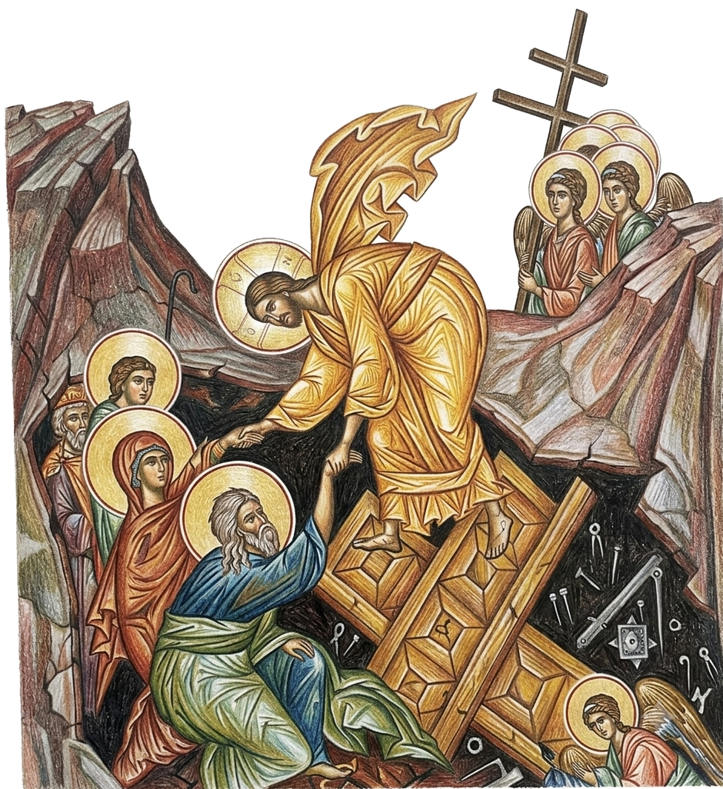

Through the incarnation of God the Logos, there entered into
human nature the all-perfect Divine Wisdom, the all-perfect Divine Logic, and the all-perfect
Divine Mind. ‘The Word became flesh,’ which means: all the transcendental divine
values became internal to human nature…. He, as the God-man, is the most perfect
synthesis of the divine and the human…of the natural and the supernatural, of the
physical and the metaphysical, of the real and the ideal. In Him, being the God-man, there
was created and preserved in the most ideal way an equilibrium between the divine and the
human; and preserved together with this was the autonomy of what is of man and human, as well
as the autonomy of what is of God and divine.14

In the fresco of The Anastasis – Christ’s Descent into Hades, Jesus
Christ tramples Death and Hades and leads the righteous to heaven beginning with Adam and
Eve. The shattered ‘Doors of Hades’ can be seen under Christ’s feet.
“For He alone, being Word of the Father and above all, was in consequence both able
to recreate all, and worthy to suffer on behalf of all and to be an ambassador for all with
the Father. For this purpose, then, the incorporeal and incorruptible and immaterial Word
of God entered our world…. Thus, taking a body like our own, because all our bodies
were liable to the corruption of death, He surrendered His body to death in place of all,
and offered it to the Father. This He did out of sheer love for us, so that in His death
all might die, and the law of death thereby be abolished because, when He had fulfilled in
His body that for which it was appointed, it was thereafter voided of its power for
men….
The Word perceived that corruption could not be got rid of otherwise than through death; yet
He Himself, as the Word, being immortal and the Father’s Son, was such as could not
die. For this reason, therefore, He assumed a body capable of death, in order that
it…might become in dying a sufficient exchange for all, and, itself remaining
incorruptible through His indwelling, might thereafter put an end to corruption for all
others as well, by the grace of the resurrection.”15
The Lord Jesus Christ — Fully God and Fully Man
Through the incarnation of God the Logos, there entered into human nature the all-perfect Divine Wisdom, the all-perfect Divine Logic, and the all-perfect Divine Mind. ‘The Word became flesh,’ which means: all the transcendental divine values became internal to human nature…. He, as the God-man, is the most perfect synthesis of the divine and the human…of the natural and the supernatural, of the physical and the metaphysical, of the real and the ideal. In Him, being the God-man, there was created and preserved in the most ideal way an equilibrium between the divine and the human; and preserved together with this was the autonomy of what is of man and human, as well as the autonomy of what is of God and divine.14

“For He alone, being Word of the Father and above all, was in consequence both able to recreate all, and worthy to suffer on behalf of all and to be an ambassador for all with the Father. For this purpose, then, the incorporeal and incorruptible and immaterial Word of God entered our world…. Thus, taking a body like our own, because all our bodies were liable to the corruption of death, He surrendered His body to death in place of all, and offered it to the Father. This He did out of sheer love for us, so that in His death all might die, and the law of death thereby be abolished because, when He had fulfilled in His body that for which it was appointed, it was thereafter voided of its power for men….
The Word perceived that corruption could not be got rid of otherwise than through death; yet He Himself, as the Word, being immortal and the Father’s Son, was such as could not die. For this reason, therefore, He assumed a body capable of death, in order that it…might become in dying a sufficient exchange for all, and, itself remaining incorruptible through His indwelling, might thereafter put an end to corruption for all others as well, by the grace of the resurrection.”15